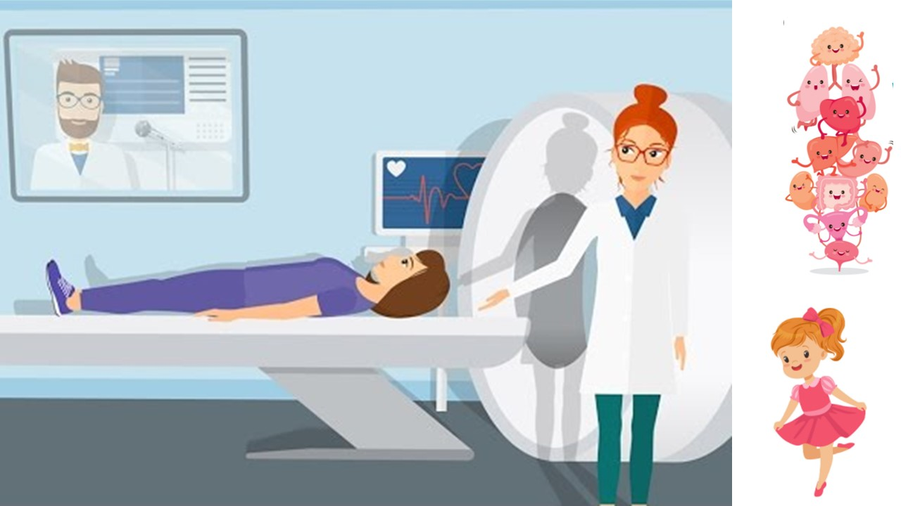
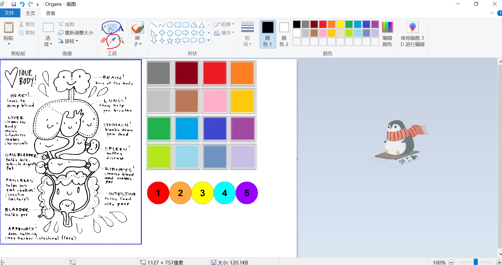
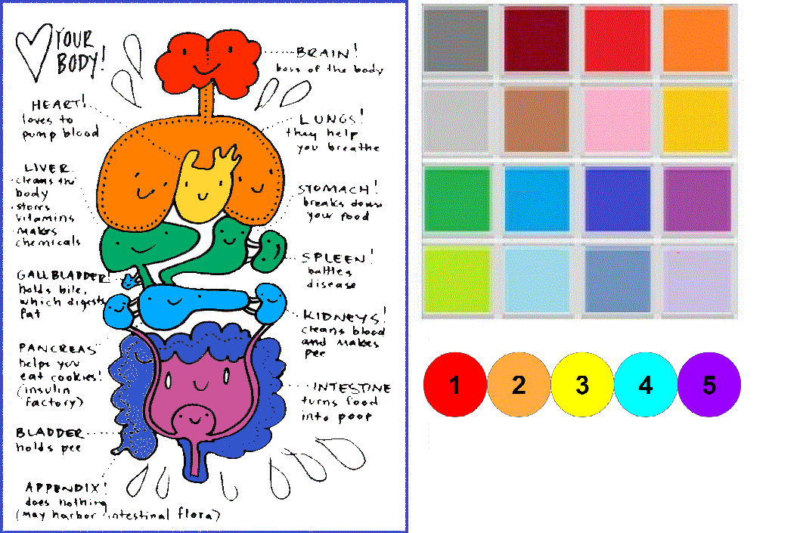
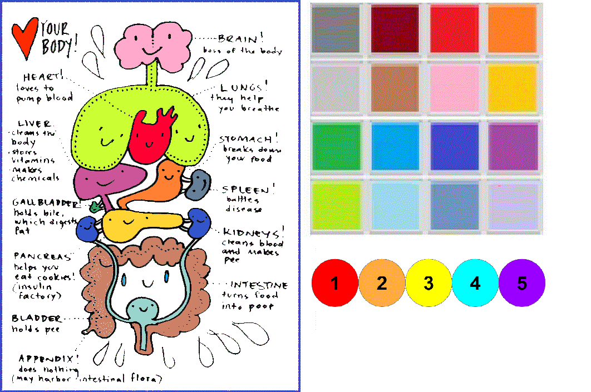

。Clinical Resources
<< Color the Organs: Sounds in Isolation or Syllables
I developed a coloring activity for children with speech sound disorders to work on sounds in syllables via teletherapy. The treatment plan was developed in conjunction with my clinical partner, Keely Morrow, BA (Hons), MSc. Linguistics, who is a 2nd-year MSc. Speech-Language Pathology student at the University of Alberta.
A "patient", "the tiptoe girl" who likes the tiptoe /t/ sound, comes for a CT scan. We talk about how a CT scan can see the inside of our body, and that CT scans can be colored. Open the picture in painting software. To color the organs, the child needs to produce certain sounds or syllables to pick up the colors. The pacing dots with numbers can help control the rate and number of productions. Once the child produced the target sound, pick up the color from the color boxes with the eye dropper tool in Paint (indicated with the red circle), and color the organ with the paint bucket tool (indicated with the blue circle).
 
When coloring, it's not a bad idea to talk about the organs and their functions. The clinician can choose which organ(s) to color, or give the autonomy to the child or the parent. Here are some examples of how the colored page looks like.
 
This activity can be done in Microsoft Paint or any equivalents. The idea is that I wanted a personalizable online coloring interface. The clinician has the flexibility to control what to produce and how many times. If you are working at the word level, you can put flashcards with the colors in the background, or cartoon characters holding the color boxes or paint buckets. The coloring page can be any high-quality line drawing pictures based on the child's interests.
The coloring page was adapted from the resource from this Pinterest page. More free anatomy coloring pages can be found at I Heart Guts: Free Stuff. Special thanks to Kris De Asis for coloring an example page.
Download: The blank coloring page.
{kind=link}
Should you have any questions regarding this activity, please feel free to contact me.